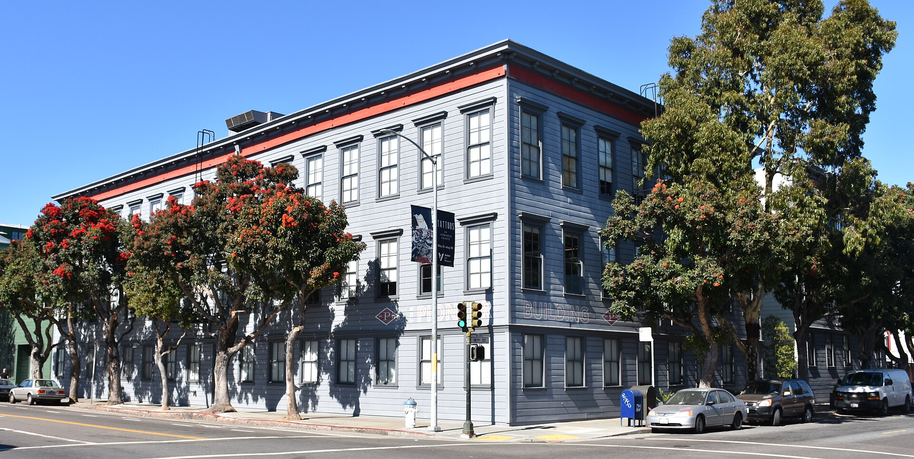
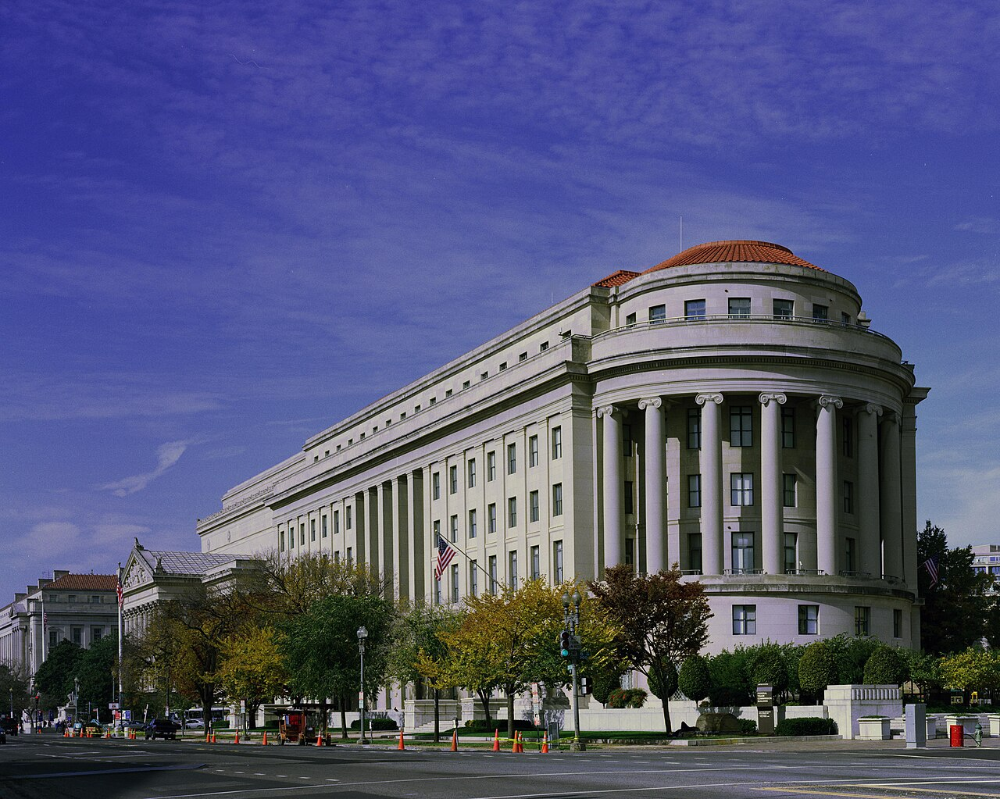

Vol. I · No. 52 · Thursday, July 9, 2026 · 13 items · 6 sections · ~15 min read
Three frontier models reach the public in a single morning, one of them only after Washington cleared it; the month-old Gulf truce collapses into open fire and oil jumps past seventy-five dollars; and a video-game retailer wins the stock to chase a company many times its size.
1
The Splash · Artificial intelligence · San Francisco & Washington
OpenAI ships GPT-5.6 to everyone, two weeks late, only after the government cleared it to

OpenAI’s headquarters in San Francisco’s Pioneer Building; the company released GPT-5.6 to the public on July 9 after a federal review held it back. — Wikimedia Commons
On Thursday, July 9, OpenAI released its GPT-5.6 family to every ChatGPT user and API developer, roughly two weeks after it had confined the models to about twenty government-approved partner companies at Washington’s request. The sequence is the unusual part: under a June 2 executive orderConceptA Trump order asking frontier labs to voluntarily submit their most capable models for federal benchmarking about thirty days before public release. It is the legal hook for GPT-5.6’s delay., OpenAI submitted its most powerful system for benchmarking about a month before launch and shipped only after, per Axios, the administration granted broad-release permission following additional testing and further meetings. The company priced the line in three tiers, Sol the flagship at $5 per million input tokens and $30 output, Terra the workhorse, and Luna the cheapest, and said Sol set a state-of-the-art 88.8% on the Terminal-BenchConceptAn agentic-coding benchmark measuring whether a model can complete real software tasks in a command line. It is the yardstick the labs now compete on; Sol scored 88.8%. coding benchmark, ahead of Anthropic’s Fable 5.
The precedent is the story. Washington has restricted the chips that train models for years, but a pre-market national-security review that decides when a finished American model may reach its own public is new, and OpenAI said so plainly, warning that it does not believe this kind of access process “should become the long-term default” because it “keeps the best tools from users, developers, enterprises, cyber defenders, and global partners.” The launch also made July 9 a landmark on its own terms: OpenAI’s GPT-5.6, xAI’s Grok 4.5, and Anthropic’s Fable 5InstitutionAnthropic’s flagship Claude model and GPT-5.6’s chief rival, benchmarked at 83.4% on Terminal-Bench. It went public the same day. were all publicly available frontier systems by the same morning.
The economics underneath that race are turning against the incumbents even as they position to list. Open-weight Chinese models undercut them by 60 to 90% on price, and the labs’ answer is to ship faster and cheaper, which is exactly what a same-day GPT-5.6, Grok, and Fable release looks like, all while OpenAI (valued near $868 billion) and Anthropic (near $1.09 trillion, its run-rateConceptAnnualized revenue, current monthly sales multiplied by twelve, the growth figure used to value pre-IPO AI labs. Anthropic’s now leads OpenAI’s. now ahead of OpenAI’s) both move toward public offerings. For the reader tracking the law catching up to AI, the clearance gate is the near-future arriving early.
“We don’t believe this kind of government access process should become the long-term default.”
— OpenAI, July 8
Why it mattersA model that ships only after federal sign-off is a new category of regulated asset, and the timing gate now belongs in the risk section of every AI company’s offering documents. On one morning three labs put frontier systems on the market at once; the prior restraintConceptThe First Amendment doctrine against government blocking expression before it is published, the latent constitutional question if a “voluntary” model review hardens into a mandatory gate. question sitting underneath a “voluntary” review is the fight a capital-markets lawyer will soon be papering.
The Front · The world · Ankara & the Gulf · LLLCLRR
Trump declares the Iran ceasefire “over,” and the two sides trade the heaviest blows in months
From the NATO summit stage in Ankara on Wednesday, July 8, President Trump declared the month-old, sixty-day ceasefire with Iran “over,” calling its negotiators “scum” and “a waste of time,” after Iran struck three commercial vessels in the Strait of HormuzPlaceThe chokepoint between Iran and Oman carrying about a fifth of the world’s seaborne oil. Closing it is Iran’s chief leverage over global prices. on July 7, among them a Qatari-owned gas carrier and a Saudi supertanker. U.S. Central Command answered with strikes on more than eighty targets, air defenses, command nodes, coastal radar, anti-ship missiles, and dozens of Revolutionary GuardInstitutionIran’s elite Islamic Revolutionary Guard Corps, which runs the small-boat swarm tactics used against Gulf shipping. fast boats, hitting sites inside Iran for the first time in months; Iran’s health ministry reported fourteen killed and seventy-eight wounded across five provinces.
Iran said it retaliated against more than eighty U.S. installations in Bahrain and Kuwait, and hours before the strikes the Treasury rescinded the sixty-day waiverConceptA temporary U.S. license permitting otherwise-barred Iranian oil exports. Revoking it tightens global supply. that had let Iran export oil. Markets moved with the fighting: Brent crude jumped roughly 5% toward $78 and WTI topped $75, energy and defense names caught a bid, and the maritime threat level for the strait was raised to “severe.” Iran’s lead negotiator, Mohammad Bagher GhalibafPersonIran’s lead negotiator and former parliament speaker, who warned that the strait reopens only on “Iranian arrangements, not American threats.”, said the waterway reopens only on Iran’s terms, and Vice President Vance promised “a response from the American military.”
Framing noteThe right (Fox) foregrounds Iranian aggression and Trump’s resolve, casting the strikes as retribution for attacks on civilian shipping; the left and center (CNN, Al Jazeera) frame Trump as the destabilizer, an impulsive escalation coupling angry demands of allies with new threats.
Why it mattersA reopened Hormuz is the single biggest geopolitical premium in the oil price, so a truce that collapses back into strikes reprices energy, defense, and inflation at once, and it lands the same afternoon the Fed’s own minutes warned inflation risks are still tilted up.
GameStop’s shareholders hand Ryan Cohen the stock to chase eBay, a company many times its size
At its July 7 annual meeting, GameStop shareholders voted to raise the company’s authorized share countConceptThe charter ceiling on how much stock a company may issue. Raising it to 2.5 billion pre-loads currency for a stock-funded merger. to 2.5 billion, a change the company said was to create capacity for “strategic transactions, including its proposed acquisition of eBay.” The measure carried with about 231.7 million votes for to 104.6 million against, and the stock ticked up toward $22. GameStop has bid $125 a share for eBay since May, an offer eBay’s board rejected as “neither credible nor attractive,” and it already holds economic exposure to roughly 9.8% of eBay through shares and derivatives, a toeholdConceptAn acquirer’s pre-bid stake in its target, here about 9.8% of eBay, that lowers the cost of a takeover and pressures the board. it can press.
The mechanics are the point, and Matt LevineConceptAuthor of Bloomberg’s daily “Money Stuff,” the market’s most-read explainer of deal mechanics.’s July 8 “Money Stuff” named them: because eBay dwarfs GameStop, this is less GameStop buying eBay than Ryan CohenPersonGameStop’s chairman and CEO, the Chewy co-founder and activist who built its meme-era cash pile and now drives the eBay pursuit., who days earlier surrendered his own performance award worth up to about $35 billion to clear a proxy-fight obstacle, campaigning to run eBay in a stock-heavy merger whose target holders would end up owning most of the combined company. The enlarged authorization is the currency for exactly that, and Cohen has signaled he may take a bid directly to eBay’s holders.
Why it mattersThis is the whole capital-markets toolkit in one deal, an authorized-share amendment, a rejected premium bid, a derivatives-built toehold, and a threatened hostile tender, run by a founder who turned a meme-stock balance sheet into acquisition currency.
Capability, the labs, and the money betting on them.
4
Artificial intelligence · Santa Clara
Nvidia sheds a trillion dollars in value, and the AI trade rotates without breaking
Nvidia’s headquarters in Santa Clara; the chipmaker has lost roughly $1 trillion in market value since mid-May. — Wikimedia Commons
Nvidia has shed roughly $1 trillion in market value in under two months, Bloomberg reported July 8, with the shares down about 16% from a May 14 record near $235 and trading around $197. The move is not a fundamentals story: Nvidia posted record first-quarter sales of $81.6 billion and GAAP net income of $58.3 billion, up 211% year over year, and analysts still project among the fastest revenue growth in the S&P 500 this year. On the multiple, the stock now screens cheaper than more than half the index, Hershey and Dominion Energy included.
What is moving is leadership inside the AI trade rather than conviction in it. Capital is rotating toward the memory makers, the high-bandwidth-memoryConceptThe stacked memory, from SK Hynix, Micron, and Samsung, that feeds AI accelerators. It is increasingly the tighter supply constraint than the GPUs themselves. suppliers increasingly seen as the real bottleneck for AI data centers, and away from the graphics-chip champion that led the first leg. Nvidia is off about 12% on the month alongside Microsoft and Broadcom, a synchronized cooling in the market’s most crowded corner rather than a bubble visibly deflating. Jensen HuangPersonNvidia’s co-founder and chief executive, whose company briefly anchored the entire AI-hardware boom. still runs the most valuable name in the trade, just no longer its sole engine.
Why it mattersThe AI-capex trade is the market’s center of gravity, so whether Nvidia’s slide is a rotationConceptCapital shifting within a sector, here from GPU leaders toward memory suppliers, rather than money leaving the sector altogether. or the first crack decides the tape for everything downstream, from the pre-IPO labs to the contractors wiring their data centers.
Capital markets, M&A, and the money behind the money.
5
Markets & deals · South Florida · Coral Gables
A Coral Gables contractor pays $1.65 billion to buy the data-center boom outright
A data-center server hall; roughly 90% of Superior Group’s revenue comes from data centers. — Wikimedia Commons
MasTecInstitutionThe Coral Gables infrastructure-construction company founded by the Mas family, a bellwether South Florida public comp., the Coral Gables infrastructure contractor built by the Mas family, agreed to buy The Superior Group for about $1.65 billion, roughly $1.175 billion in cash and $475 million in stock plus a three-year earnoutConceptDeferred purchase price paid only if the acquired business hits agreed targets, here over thirty-six months, which shares risk with the seller., the company announced July 7. Superior, a 3,000-employee electrical contractor founded in 1925, draws about 90% of its revenue from data centers and roughly 70% from hyperscaleInstitutionThe mega-cloud buyers, Amazon, Microsoft, Google, and Meta, whose data-center spending drives contractors like Superior. customers, making the deal an undisguised bet on the AI build-out; MasTec called it immediately accretiveConceptA deal that raises the acquirer’s per-share earnings from day one, the outcome buyers cite to justify the price. to revenue, earnings and cash flow, and the stock rose about 5.5%.
The deal is a South Florida set piece: a Coral Gables public company advised by Holland & Knight, the Miami-founded firm, buying deeper into the hottest end market in construction. CEO Jose Mas framed it around “the buildout of data center, power and mission-critical infrastructure,” the same demand curve driving the contractors, the memory makers, and the pre-IPO labs alike. Closing is expected by late July, subject to antitrust clearance.
Why it mattersThe AI story keeps resolving into physical infrastructure, and the firms wiring the data centers are where the capital expenditure actually lands, a local bellwether a Miami dealmaker can watch print quarter by quarter.
The June Fed minutes reveal a divided committee still worried about inflation
Minutes of the June 16-17 Federal Reserve meeting, released July 8, showed a committee split on the path for rates and still judging inflation risks “tilted to the upside.” At that meeting the Fed, under Chair Kevin WarshPersonThe current Fed chair, a former governor seen as more hawkish and rules-based than his predecessor., held its benchmark rate unanimously at 3.50 to 3.75%, and the minutesConceptThe detailed account of a Fed meeting, released three weeks later and parsed for internal splits and forward guidance. read more hawkish than markets had positioned for, tempering bets on a near-term cut.
The reaction was muted, the ten-year Treasury yield near 4.47% and the two-year around 4.11%, as the Treasury sold ten-year notes the same day and thirty-year bonds the next in back-to-back auctionsConceptThe government’s scheduled sales of new debt; strong or weak demand at the ten- and thirty-year sales tests where yields settle.. The hawkish tone collided with the day’s other headline, an oil shock from the Gulf that cuts directly against the disinflation the Fed is waiting on.
Why it mattersThe rate path sets the discount rate under every valuation in this brief, and a committee that still fears inflation, into an oil spike, is a committee less likely to hand the market the cuts it has priced.
The regulators, the rulings that move markets, and the business of the profession.
7
Law & the courts · Washington
The FTC forces John Deere to open its repair software to farmers

The Apex Building, headquarters of the Federal Trade Commission, which announced the Deere settlement July 8. — Wikimedia Commons / Carol M. Highsmith
The Federal Trade Commission and five states announced a settlement on July 8 resolving their antitrust suit against Deere & Company, the tractor maker, over farmers’ right to repairConceptThe movement asserting owners’ and independent shops’ right to fix products they own, against manufacturers’ software and parts locks.. For ten years under regulator supervision, Deere must give farmers and independent shops the same repair resources it gives its authorized dealers, the software to read and clear fault codes, reprogram electronic components, and restart equipment after emissions shutdowns, plus technical manuals. Deere will pay the states $1 million toward enforcement costs.
The suit, filed in January 2025 by the FTC and the attorneys general of Arizona, Illinois, Michigan, Minnesota and Wisconsin, alleged Deere unlawfully engaged in monopolizationConceptThe Sherman Act Section 2 theory targeting unlawful maintenance of market power, here in the aftermarket for repairing Deere’s own machines. of the aftermarket for repairing its own machines by locking essential software to its dealer network. The consent orderConceptA court-entered settlement in which a defendant agrees to enforceable conduct rules without admitting liability; here it binds Deere for ten years. is a marquee win for a right-to-repair movement that has spread from phones to farm equipment, and a template for how software locks get challenged under antitrust law.
Why it mattersRight-to-repair is becoming settled antitrust terrain, and a ten-year consent decree against a manufacturer of Deere’s size tells every company that builds a software moat around its aftermarket how the enforcers will treat it.
A judge orders Trump’s $5 million Carroll judgment paid out, and Trump appeals
Judge Lewis Kaplan of the Southern District of New York ordered on July 8 that the $5 million civil jury award to E. Jean CarrollPersonThe writer who won civil verdicts against Trump for sexual abuse and defamation; the $5 million award is from the first of the two trials., plus interest, be released to her, days after the Supreme Court denied Trump’s petition challenging the verdict. Trump had asked Kaplan to withhold the money until the Court ruled on a motion for reconsideration he filed July 6; Kaplan declined, and Trump filed notice that he will appeal the release order.
The dispute is a clinic in what happens after a money judgment survives appeal. Trump’s team argued the funds could prove unrecoverable if the verdict were later disturbed, because Carroll intends to give the money away, the classic argument for a stay pending appealConceptA court order freezing enforcement of a judgment while it is appealed, usually secured by a bond so the winner is protected if it is reversed., usually secured by a bond. Kaplan was unpersuaded, and the petition for rehearingConceptA rarely granted request asking the Supreme Court to reconsider an appeal it has already declined, Trump’s final procedural option here. is his last procedural lever.
Why it mattersThe fight is over enforcement mechanics, when a judgment creditor actually gets paid, and it shows how far a well-resourced defendant can stretch the interval between a verdict and a wire, even after the Supreme Court has turned the case away.
Consequential developments, and how the spectrum frames them.
9
The world · Ankara · LLLCR
NATO closes its Ankara summit with €70 billion for Ukraine and a license to build Patriots
A MIM-104 Patriot launcher on exercise; the Ankara summit granted Ukraine a license to manufacture the system. — Wikimedia Commons / U.S. Marine Corps
The two-day NATO summit in Ankara closed July 8 with a €70 billion ($80 billion) assistance pledge for Ukraine and, more striking, Trump’s agreement to let Ukraine manufacture PatriotConceptThe MIM-104, the U.S. surface-to-air missile system central to Ukraine’s defense against Russian ballistic missiles. The manufacturing license is the novel concession. air-defense systems: “We’ll give them the right to make Patriots. We’ll show them how to do it,” he said, adding that the United States would also buy Ukrainian drones. His bilateral with President Zelensky was markedly warmer than their past clashes; Trump said the two had “developed a good relationship” and that a deal to end the war was “on the horizon.”
The summit was not all comity. Trump lashed allies over Greenland and their tepid support for his Iran campaign and renewed threats against Spain over its defense spending, even as Russia struck Kyiv during the proceedings and Ukraine warned it can no longer intercept Russian ballistic missiles with its dwindling Patriot stocks. President ErdoganPersonRecep Tayyip Erdogan, Turkey’s president and the summit’s host, who called the gathering “historic.” called the gathering “historic.” The Patriot license is the concrete deliverable: a manufacturing transfer, not just a shipment.
Framing noteThe right frames the summit as Trump extracting burden-sharingConceptThe long-running NATO fight over how much each member spends on defense, which Trump has pushed toward higher targets. and a strategic win; the left foregrounds the chaos, the threats to Spain and Greenland, though both tiers agree on the deliverables, the money and the Patriot license.
Why it mattersA license to build Patriots, rather than a one-time transfer, turns Ukraine from a recipient into a producer and signals a longer-horizon Western bet, while the burden-sharing pressure reshapes every ally’s defense budget.
Trump moves to strike Syria from the terrorism list, sealing al-Sharaa’s rehabilitation
On July 8 Trump formally notified Congress of his intent to rescind Syria’s designation as a state sponsor of terrorismConceptA U.S. designation carrying sweeping trade, aid, and financial sanctions. Syria has held it since 1979., opening a 45-day reviewConceptThe statutory waiting period after the president notifies Congress of intent to delist, before the rescission takes effect. before it becomes final. He told Syrian President Ahmed al-SharaaPersonSyria’s president, the former HTS militant leader now internationally rehabilitated and courted as a head of state. in person at the Ankara summit that he expected to do it, and the State Department cited al-Sharaa’s counterterrorism steps, formal assurances, and a June 2025 executive order directing sanctions relief.
Syria has carried the designation since 1979, and lifting it would open international trade and investment for reconstruction, completing the improbable rehabilitation of a former militant leader now received as a head of state. The move is procedural for now, a notification and a clock, but it is the substantive unwinding of nearly half a century of U.S. sanctions architecture on Damascus.
Why it mattersState-sponsor delisting is one of the heaviest sanctions levers Washington holds, and removing it from Syria rewires the legal and financial map for anyone contemplating exposure to a post-Assad economy.
Film, television, video games, and the business and law beneath them.
11
Video games · Irvine
Xbox sends Obsidian back to the wasteland, killing the “Avowed” sequel for a new “Fallout”
Obsidian’s Josh Sawyer, director of Fallout: New Vegas, reported to lead the studio’s new Fallout game. — Wikimedia Commons
Microsoft is redirecting Obsidian Entertainment, the Irvine studio, to a new entry in Bethesda’s Fallout franchise, Bloomberg’s Jason Schreier reported July 8, with Josh SawyerPersonThe Obsidian design veteran who directed Fallout: New Vegas, patron saint of the systems-and-choices school of role-playing games., the game director of the cult-revered Fallout: New VegasConceptObsidian’s 2010 entry in the post-apocalyptic RPG series, widely canonized as its best-written. Its director now returns to the franchise after sixteen years., reported to lead it. The pivot cost two projects: a sequel to Obsidian’s 2025 RPG Avowed was canceled, as was a separate Sawyer-directed original game described as Fallout-like in structure. Obsidian recently laid off about a quarter of its staff.
The reshuffle sits inside the Xbox ResetConceptCEO Asha Sharma’s cost restructuring, cutting 3,200 jobs, roughly a fifth of the division, and divesting or closing five studios after years of heavy spending. that CEO Asha Sharma announced earlier, though sources caution the strategy is “in flux.” Sending New Vegas’s director back to Fallout after sixteen years is the rare fan-service move inside a brutal cost retrenchment, and the loudest signal yet of how Microsoft is reallocating its studios after the $69 billion Activision purchase.
Why it mattersThis is EASL in its rawest form, studio consolidation, IP reallocation, and creative labor cut at scale, at a platform that spent $20 billion and is now deciding which teams and which franchises survive.
Oregon asks a court to freeze the Paramount–Warner Bros. deal and calls the DOJ approval “corrupt”
Oregon’s attorney general, Dan Rayfield, said July 8 he will ask a Multnomah County court to force Paramount Skydance–Warner Bros.InstitutionThe roughly $110 billion combination of two of Hollywood’s largest studios, which David Ellison says is on track to close by September. to hand over withheld records and to pause its roughly $110 billion acquisition for 60 days. The records sought concern Project WarriorConceptParamount’s internal code name for its merger-clearance campaign, now the target of Oregon’s records demand., Paramount’s internal code name for its clearance campaign, along with its lobbying of the Trump administration and any role it played in the Justice Department’s statement clearing the deal, which Rayfield suggested was “corrupt.”
The move keeps a state antitrustConceptThe power of state attorneys general to sue to block or delay a merger under their own laws, even after the federal government clears it. threat alive after federal clearance: a coalition including California and New York is still probing, and Paramount’s lawyers told the court they will not close before July 22, the same date the deal’s European review was extended to. “We’re not going to let Paramount Skydance play hide the ball,” Rayfield said.
Why it mattersEven a cleared merger is not safe until it closes, and a state attorney general wielding a records demand and a 60-day freeze shows how much leverage the states retain over media consolidation, the exact terrain of entertainment law.
At Allen & Co.’s Sun Valley retreat, the tech titans now outnumber the media moguls
Allen & Co.’s Sun ValleyInstitutionThe off-the-record “billionaire summer camp” in Idaho where deals like Disney–Cap Cities and Amazon–MGM were first floated. conference, the invitation-only Idaho retreat where landmark media deals have historically been hatched, opened July 7 with Jeff Bezos and Jared Kushner among the July 8 arrivals. The media contingent is familiar, Paramount’s David EllisonPersonThe Skydance chief who now runs Paramount and is pursuing Warner Bros., one of the summit’s central media figures., Warner Bros.’ David Zaslav, Comcast’s Brian Roberts, Netflix’s Ted Sarandos, Disney’s Bob Iger, but the guest list now tilts unmistakably toward technology and finance.
Bezos, Mark Zuckerberg, Bill Gates, Tim Cook and his incoming successor John Ternus, OpenAI’s Sam Altman, and Palantir’s Alex Karp headline a gathering that Fortune framed as the summer camp media built, now run by the tech titans replacing them. The backdrop themes, per Deadline, are consolidation, the Comcast VersantInstitutionThe cable-networks company Comcast is spinning off, a live consolidation thread at this year’s gathering. spinoff, the pending Paramount–Warner Bros. merger, and AI, the same forces reshaping every business in this brief.
Why it mattersThe room where media deals get sketched is now dominated by the platforms that have swallowed media’s economics, a shift in power that will shape the next decade of entertainment M&A.